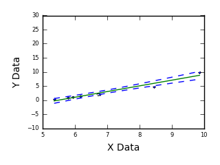
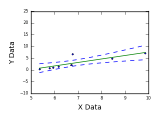
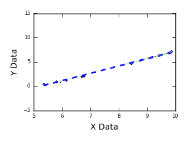
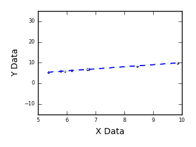
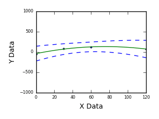
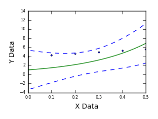
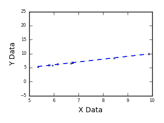
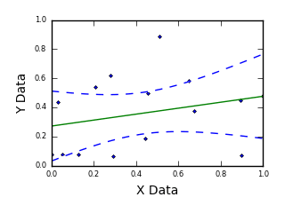

Single Outlier At End Point  High resolution animation and still images |
errors in recording experimental data. |
Single Outlier At Mid Point  High resolution animation and still images |
errors in recording experimental data. |
Fitting Parallel Data  High resolution animation and still images |
changes during data collection, such as temperature changes on different days when making multiple data collection runs. |
Data With A Large Step  High resolution animation and still images |
changes during data collection such as a temperature change during a lunch break. |
Data With A Poorly Defined Region  High resolution animation and still images |
data in the region that is poorly defined. |
Equation Missing An Offset  High resolution animation and still images |
an offset to an equation that does not have one. This can be caused by experimental equipment introducing bias (such as a DC offset) during data acquisition. Fitting the data to an equation with an offset will reveal the bias. |
Data Scatter Over Entire Range  High resolution animation and still images |
by increasing the total number of data points. |
Fitting Random Data  High resolution animation and still images |
random data that has no relationship of any kind. |